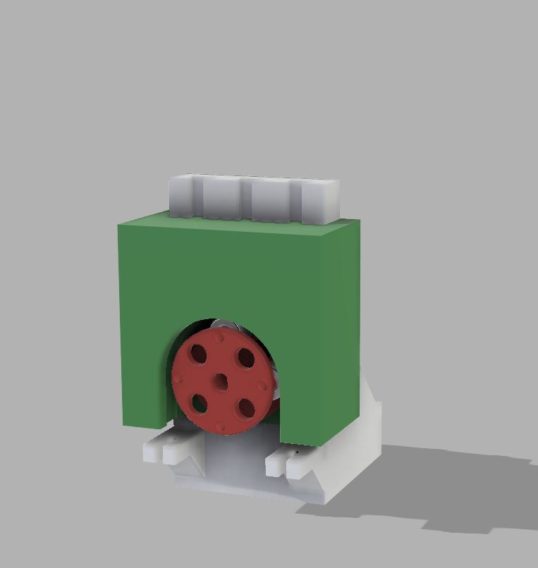
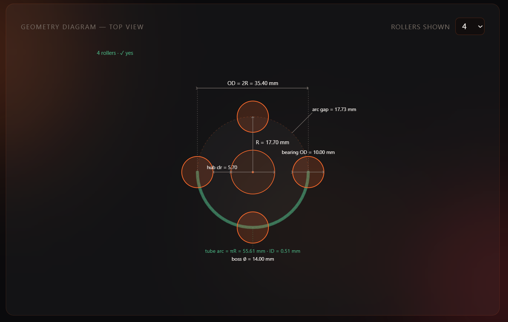
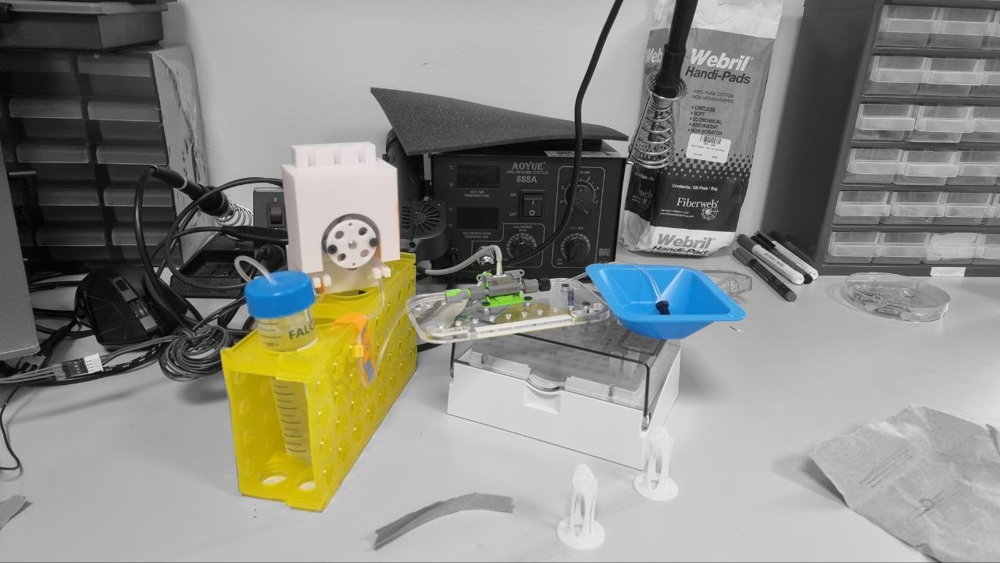
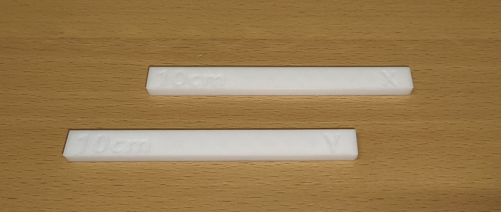
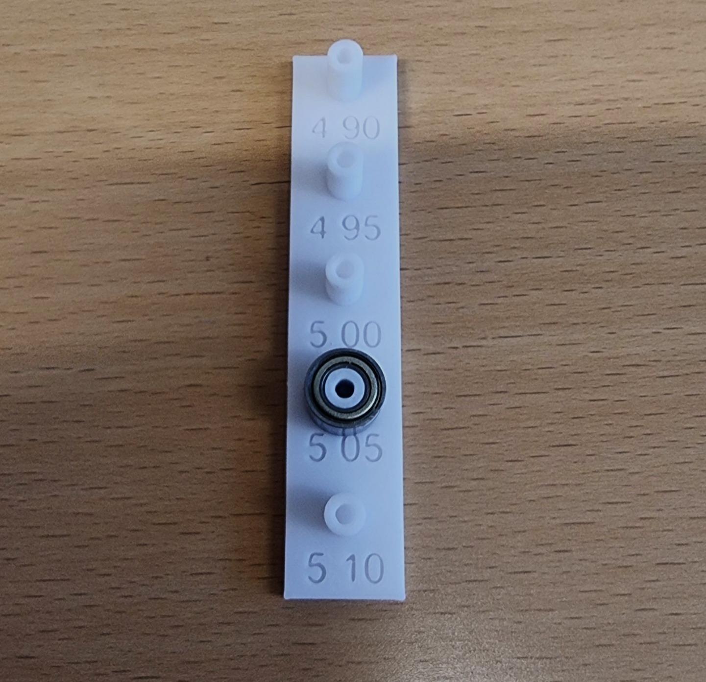

Prototype Design Space
A trail of hardware decisions — each prototype a question posed to the physics. Click a node to open its full story.
Precision & calibration validation
Stable CV, reliable step-count calibration, model validated across the volume range. Nothing built yet.
Not startedMulti-liquid mechanism
One motor, 5 liquids, a separate tube per liquid — without 5 motors (size/portability). Mechanism still open. Nothing built yet.
Not startedSystem integration
Pump + multi-liquid mechanism + electronics in one dispensing-module enclosure. Nothing built yet.
Not started5 µL 4-roller peristaltic — baseline
Purpose
The first physical build — its job was never to hit spec, but to learn. A minimum viable prototype with three goals:
- Prove the concept — can a peristaltic pump be built in this modular, 3D-printed, point-of-care form, and does it actually move liquid?
- Validate the model — is the geometry model I built correct, and does how I modelled the system match reality?
- Learn before committing — get a physical object in hand to extract as much information as possible before the next design cycle.
On all three it delivered: it pumps, the model predicts the messy reality to ~11 %, and it exposed three concrete, fixable design errors.
Parts & assembly — the physical build
Five components: four printed parts, the roller bearings, and the tube. proto-02 reuses the same set (edited, not redesigned) — so this is the canonical parts description for the whole pump line.
| Part | What it does |
|---|---|
| NEMA17 motor holder | L-bracket; a central bore passes the motor shaft (motor bolts to the back). The top edge has dovetail-female channels that guide the pump head straight down to a hard stop — the stop fixes seat depth and keeps the head off the rotor. |
| Rotor (Main + Cover) | Disk on the shaft (keyed hole) holding the rollers in 4 pockets at 90°; the cover caps them in. The radius to the bearing outer surface is the working roller radius R. |
| Roller bearings — 8 × MR105ZZ | Two stacked per roller position (4 × 2 = 8). A single MR105ZZ (10 mm OD) isn't wide enough to span the tube, so they're doubled for contact width; radius Rr = 5 mm unchanged. |
| Pump head | Carries the semicircular 180° occlusion wall; slides down the dovetail and bottoms on the hard stop. The arch wraps the top of the rotor — the tube routes up and over the top. |
| Tube | Masterflex 2-stop microbore (Puri-Clear LL, 0.51 mm ID), bought through Darwin Microfluidics — the reseller; the tube itself is Masterflex. |


Parameters (as built) & why each was chosen
Designed using the Rotor Geometry Solver and the Displaced-Volume Model. The second tool outputs the arc compensation that is pasted into the first — so its inputs propagate into the physical rotor size.
| Parameter | Value | Why this value |
|---|---|---|
| Target volume / stroke | 5.0 µL | Smallest aliquot the dispensing application targets |
| Roller count N | 4 | Fewest hand-offs for discrete dosing (see below) |
| Rollers engaged Nc (entered) | 1 ⚠ | Mistake — a 180° arc with 4 rollers always has 2 engaged |
| Tube inner diameter d | 0.51 mm | Smallest 2-stop microbore that gives a workable rotor size |
| Tube wall w | 0.85 mm (est.) | From a similar tube (online) + caliper check — see below |
| Roller bearings | 8 × MR105ZZ, 10 mm OD (Rr = 5 mm) — 2 stacked/roller | A single bearing isn't wide enough to span the tube → doubled for width |
| Interference δ (design) | 0.20 mm | Mid of the 10–20 % × 2w occlusion band |
| Inflation factor k | 1.15 | Compliant-tube correction (Klespitz & Kovács 2022) |
| Rotor radius R (built) | 17.70 mm | Solver output (carries the Nc=1 error) |
| Designed gap G (CAD) | 1.75 mm ⚠ | Nominal only — never measured (no caliper access); should have been ≈1.50 mm |
| Loose-fit tolerance | 0.25 mm ⚠ | Too loose → head wobble |
| Steps / stroke (firmware) | 50 | 200 steps/rev ÷ 4 rollers |
The tube is a Masterflex 2-stop Puri-Clear LL (0.51 mm ID), platinum-cured silicone microbore, bought through Darwin Microfluidics (the reseller).
Key decision — why 4 rollers
Selected over higher counts despite continuous-flow practice (Cole-Parmer, Ismatec) recommending 8–10 rollers for low-flow accuracy below 5 mL/min. The distinction is operational mode: those recommendations target continuous metering, where more rollers reduce pulsation. This system does discrete stop-start aliquot dosing, where each roller hand-off (one releasing as the next engages) is an error event at the stop. Fewer rollers → fewer hand-offs per dispense → fewer stop-event errors — the opposite of the continuous-flow heuristic. A 4-roller pump completes ~one hand-off where an 8-roller pump completes ~two.


The design calculation, worked
The two tools run a six-step chain from tube mechanics to rotor size. Each step is described, then computed at the proto-01 design point.
1. Lumen area A. The lumen is the open channel inside the tube that carries the liquid — a circle of diameter d. Its cross-sectional area sets how much volume a given length of swept tube holds:
with d = 0.51 mm (tube inner diameter).
2. Roller contact length Lc. When a roller of radius Rr presses a depth δ into the tube, it flattens a finite length along the flow axis. From the chord geometry of a cylinder pressed into a surface, the half-contact-width is \(\sqrt{2R_r\delta}\); doubling gives the full footprint, and the empirical factor k > 1 lengthens it because a real compliant tube contacts over a longer span than rigid geometry predicts:
with Rr = 5 mm (roller radius), δ = 0.20 mm (design interference), k = 1.15.
3. Arc compensation ΔArc. Along the contact length Lc the roller pinches the tube shut, so that segment of lumen holds no liquid and delivers nothing. The pure delivery arc (vol/A) assumes every mm of swept tube is full, so it over-counts by exactly this occluded length — the stroke must sweep an extra Lc per engaged roller to make up the shortfall. With Nc rollers engaged at once, the total compensation is their combined contact lengths:
4. Arc swept per roller arc. The arc each roller drags the tube through per stroke is the useful delivery arc (target volume ÷ lumen area) plus the compensation arc:
with vol = 5.0 µL (target volume per stroke).
5. Gross swept volume geomVol. Multiplying the swept arc by the lumen area gives the gross geometric volume displaced per stroke:
6. Rotor radius R. The rotor is sized so its N evenly-spaced rollers each sweep this arc over the 180° contact zone. Setting the pitch-circle so the per-roller arc is delivered:
with N = 4 rollers, rounded to 0.1 mm (Bambu P1S print resolution). This R = 17.70 mm is the rotor that was printed — so the Nc=1 error is now baked into the physical part.
What actually happened in the hardware
The gap was wrong — the tube was never occluded. The displaced-volume tool prescribes the gap as G = 2w − δ = 1.50 mm. The part was instead designed at 1.75 mm (nominal CAD — proto-01 had no way to measure the installed gap). The tube only fully closes once the gap drops below the "walls-kiss" point, G = 2w = 1.70 mm. Since the nominal 1.75 mm > 1.70 mm — and with no shim the tube was not squeezed and delivered nothing, so the real gap was inferably ≥ 2w too — the rollers never squeezed the tube shut. This is independent of the Nc error: the tool's gap output simply was not carried into the CAD.
The paper-shim fix. To make it run, paper was folded into the groove so the tube sat proud and the rollers could reach it. Measuring the folded paper with a caliper (itself hard — it compresses): ≈1.0–1.1 mm light, ≈0.85 mm firm, ≈0.78 mm very hard. That raised the tube by ~0.8–1.1 mm, turning the effective gap into roughly 0.9–1.1 mm — an effective interference δeff ≈ 0.6–0.8 mm, a heavy over-squeeze. The actual delivery is measured next; the model is then checked against it.
Results
Manual 1 mL open-loop calibration — two independent methods. Gravimetric is the absolute reference.
| Method | n | Mean delivered | CV | Implied µL/stroke | Error vs 1 mL |
|---|---|---|---|---|---|
| Gravimetric · reference | 3 | 678 µL | 4.5 % | 3.39 | −32.2 % |
| Flow sensor | 5 | 600 µL | 17.6 % | 3.00 | −40.0 % |
Flow reads ≈ 11.5 % below gravimetric (low-flow tails cut by zero threshold + sensor bias). Trust gravimetric for the absolute number; use flow for dynamics (ripple, priming).

Discussion — does the model predict the result?
Feeding the actual occlusion back through the model closes the loop. The built rotor sweeps arc = 27.73 mm; the net delivered volume is the gross sweep minus the real arc compensation, now using the firm-shim over-squeeze (δeff = 0.80 mm) and the true Nc = 2:
Error budget (from the 5.0 µL intent):
| Mechanism | Contribution | Confidence |
|---|---|---|
| Gap 1.75 > 1.70 mm → zero natural occlusion (needed the shim) | enabling failure | Certain |
| Shim over-compressed (δeff≈0.6–0.8 vs 0.20) → arc wasted to deformation | −1.6 to −2.0 µL | Likely |
| Nc=1 not 2 → rotor under-sized (R 17.7 vs 19.7 mm) | ≈−0.67 µL | Certain |
| Paper thickness varies 0.78–1.1 mm across sections | drives the CV | Very likely |
A systematic under-delivery (consistent, CV 4.5 %), not random noise — exactly what a fixed-geometry error looks like.
Wall thickness — a real measurement problem
w is the highest-leverage input (it sets the gap via G = 2w − δ) and the hardest to pin down. The exact tube's datasheet doesn't cleanly state the wall, so the 0.85 mm value comes from an online check of a similar tube model (the precise dimensions of this one weren't published), then verified with a caliper — which roughly confirmed it, though the soft tube compresses under the jaws so the reading is unreliable. That the pump delivered anything before reliable shimming hints w may be slightly above 0.85 mm.
Noise & vibration test (firmware)
Proto-01 was very noisy with strong vibration on the DRV8825 driver in full step. A purpose-built bench tool (vibration_test.cpp) allowed live sweeping of microstepping × speed over serial without re-flashing. On a DRV8825 there is no "smoothing library" — the levers are the acceleration ramp (already handled) and microstepping.
Bench-tested best noise-vs-torque compromise on the existing DRV8825 — quiet and smooth enough while keeping torque margin (1/4-step's torque penalty is small, so step-skip risk under the 2-roller load stays low). A silent TMC2209/2226 driver is the fallback if more silence is later needed, but it costs torque on this torque-hungry, open-loop pump. Finding: full step is the noise source; 1/4 step at ~180 RPM is the recommended operating point — free, no new parts.
Issues observed
- Tube not squeezed enough — gap too wide; needed a paper shim to function at all (the headline mechanical failure).
- Under-delivery — ≈3.4 µL vs 5.0 µL target, −32 %.
- Pump head not fixed — had to be held down by hand during delivery; no locking mechanism.
- Wobble — 0.25 mm loose tolerance let the head move, and head position is the gap.
- Noisy / vibration — full-step DRV8825 (addressed above).

→ Inputs for Proto-02
This is the design brief the next prototype carries forward.
5 µL 4-roller peristaltic — corrected geometry + gap sweep
The design (v2) Corrected geometry (Nc = 2, R = 19.7), the gap-sweep experiment, targets and the measured tube wall — the reference plan both builds execute against.
Purpose
The first build meant to actually work to spec. Proto-01 proved the concept and validated the model but carried three known, fixable errors and never occluded the tube without a paper shim. Proto-02:
- Hit a known, acceptable volume — ideally 5.0 µL/stroke, but a consistent, known volume is equally acceptable: the device spec is ±10 % / not more than ±10 µL over an accumulated dispense, so the binding requirement is low stroke-to-stroke CV, calibrated by step count — not a perfect mean.
- Fix the three proto-01 errors — Nc, gap, head lock.
- Make the gap measurable — caliper-access slots read the real installed gap, not the nominal CAD value.
- Pin down w and k — measure the tube wall before testing; back-calculate the inflation factor from clean post-fix data (proto-01 confounded two error sources).
- Understand gravimetric vs flow — with a solid build, investigate why the weighed mass reads higher than the integrated flow sensor.
Parts & assembly — what changed from proto-01
Four printed parts + 8 bearings + the tube. The full part-by-part breakdown and how it assembles lives in Proto 01 (same set, reused) — proto-02 edits them as follows.
| Part | Change from proto-01 |
|---|---|
| NEMA17 motor holder | Unchanged — reused as the fixed reference / datum (not reprinted). |
| Rotor (Main + Cover) | Radius R recomputed 17.7 → 19.7 mm (Nc fix). Planned for 2.2: tighter bearing pockets + PLA-shrink compensation. |
| Bearings (8 × MR105ZZ, 2/roller) | Unchanged. |
| Pump head | Gap-sweep heads 1.52 / 1.62 / 1.72 mm; caliper-access slots added to read the installed gap; screw-clamp lock added; sliding fit 0.15–0.20 mm/side. |
| Tube (Masterflex, via Darwin reseller) | Unchanged; wall w now measured 0.91 mm (was estimated 0.85). |
Targets & pass criteria
| Quantity | Target | Note |
|---|---|---|
| Mean volume / stroke | ~5.0 µL (≥ ~4.5 ok) | Knowing it matters more than hitting exactly 5.0 |
| Stroke-to-stroke CV | ≤ 5 % (stretch ≤ 3 %) | At CV 5 %, ±7 µL over 200 strokes (95 %) → inside the ±10 µL cap. The real pass gate. |
| Mean known to | ~±2 % | So step-count calibration lands inside ±10 % / ±10 µL |
| Head-lock gap repeatability | drift < 0.10 mm / 10 reinstalls | More drift → the lock is the error source, not the gap |
Parameters — as designed
Recomputed with the Rotor Geometry Solver and the Displaced-Volume Model, now with the corrected Nc = 2.
| Parameter | Value | Change from proto-01 |
|---|---|---|
| Rollers engaged Nc | 2 | Fixed (was 1) |
| Rotor radius R | ≈ 19.7 mm | Recomputed (was 17.70) |
| Gap G — head sweep | 1.52 / 1.62 / 1.72 mm (target installed) | New — 3 heads at δ = 0.30/0.20/0.10, tested firm→loose |
| Head lock | screw clamp (provisional) | New — easiest to test; final pick deferred |
| Loose-fit tolerance | 0.15–0.20 mm/side | Sliding fit (was 0.25, briefly 0.10 — too tight for FDM); lock removes play |
| Tube wall w | 0.91 mm (measured) | Microscope + caliper-OD + ISO/Ismatec standard converge |
| Walls-kiss 2w / OD | 1.82 mm / 2.33 mm | Measured; sets gap G = 2w − δ |
| Interference δ (nominal) | 0.20 mm | Unchanged |
| Inflation factor k | 1.15 (provisional) | Hold — back-calculate from clean data |
| Roller count N | 4 | Unchanged — discrete-dosing rationale now testable |
| Microstepping / speed | 1/4 step @ 2400 st/s (180 RPM) | Ported from proto-01 noise test |
| Steps / stroke | recalibrate to new R | Re-derive for the larger rotor |
Corrected geometry
The Nc = 2 correction grows the rotor 17.7 → 19.7 mm. This time the tool's gap prescription G = 2w − δ is carried into CAD (the proto-01 workflow failure was re-estimating it instead).
The gap sweep — the key experiment
The sweep tunes the interference δ = 2w − G — how far the gap squeezes past the measured walls-kiss (2w = 1.82 mm).
So the sweep is run firm → loose, hunting the peak:
| Order | δ | Target G | Real expectation |
|---|---|---|---|
| 1st (firm) | 0.30 | 1.52 mm | firmly sealed → real delivery; de-risks "does it pump" |
| 2nd | 0.20 | 1.62 mm | looser; if delivery rises, peak is here or looser |
| 3rd | 0.10 | 1.72 mm | likely leaks → delivery drops (≈ proto-01's marginal 1.75) |
Read the trend: delivery climbs as you loosen until it doesn't — that turning point is the operating gap. If even 1.52 leaks → go firmer; if 1.72 still climbs → go looser. The fixed rotor (sized at δ = 0.20) makes this a clean single-variable sweep that characterizes both regimes.
Planned experiments
Run order randomized; tube wear controlled (interleave heads or fresh tube section per head) — silicone hysteresis drifts weff with compression cycles and would otherwise confound the sweep. n = 10 per condition (ISO 8655 minimum; n = 5 leaves the CV estimate ~±40 % uncertain).
| # | Experiment | n | Output |
|---|---|---|---|
| E1 ✅ | Wall thickness w — microscope + caliper OD + ISO standard | 3 + OD | Done: w = 0.91, 2w = 1.82, OD = 2.33 |
| E2 | Gap sweep → volume, run firm→loose (gravimetric, record measured gap) | 10 / head | Delivery-vs-gap hump; locate the peak = operating gap |
| E3 | Precision (CV) | 10 / head | CV per head — the pass gate |
| E4 | Head-lock repeatability (caliper the 3 slots per reinstall) | 10 reinstalls | Gap drift; arc bowing/asymmetry |
| E5 | Back-calculate k (invert model from E1+E2) | — | Effective k for this tube |
| E6 | Gravimetric vs flow (log flow during E2) | subset | Why flow under-reads — method finding |
| E7 | Step-skip check at 1/4 step / 180 RPM under 2-roller load | — | Open-loop reliability |
Tube wall thickness — measurement & analysis
The gap is defined by G = 2w − δ, making the wall thickness w the highest-leverage input. Three independent lines of measurement were used to converge on a reliable value:
| Source | w | 2w | OD |
|---|---|---|---|
| Microscopy (ruler-calibrated) | 0.896 mm | 1.79 mm | 2.30 mm |
| Caliper (physical OD) | 0.91 mm | 1.82 mm | 2.33 mm |
| ISO / manufacturer standard | 0.91 mm | 1.82 mm | 2.33 mm |


Open questions / risks
- Seal threshold / leak regime (model limitation) — the arc-compensation model only holds once fully sealed; below the threshold the tube leaks and delivery drops as the gap opens (proto-01 lived here). The model needs a sealing/leak term — a genuine thesis finding.
- True w — resolved (0.91 mm).
- Effective k for this tube — provisional 1.15, confirmed only by E5 (sealed side only).
- Tube wear / hysteresis confounding the sweep if order isn't controlled.
- Backing-wall bowing under clamp load → non-uniform gap around the arc (E4 detects).
- System effects deferred — downstream backpressure + tubing dead volume will shift calibration in the assembled device; not tested at pump-only stage.
- Ambition note — at 5 µL, ±10 % = ±0.5 µL, which a single stroke won't hit open-loop; small commanded volumes rely on stroke-count averaging. State explicitly in the thesis.
v2.1 BUILT — didn't seal. Rotor undersized (2R = 39.04) + head seated ~0.45 mm too high → apex open. Fully diagnosed; every fix carried into v2.2.
First print, measurements & diagnosis
First print of the firm head (nominal gap 1.52 mm) plus a reprinted rotor, measured against the reused proto-01 holder. Built and measured — not yet pumped. The design gap 1.52 is a nominal − nominal figure (wall radius 21.22 − R 19.70); what governs occlusion is the printed, installed gap measured from the shaft.
Measurements (firm head). 2R is the precise anchor; the shaft→wall radii are the soft numbers (curved features, ±0.1+). The caliper-access holes get enlarged for 2.2 so the wall reads directly.
| Quantity | Nominal | Measured | Confidence |
|---|---|---|---|
| Bearing–bearing (2R) | 39.4 | 39.04 (39.05 / 39.03) | High — easy, precise |
| → Roller radius R | 19.70 | 19.52 | High |
| Shaft → wall, apex (top) | 21.22 | 21.74 | Low — curved (±0.1+) |
| Shaft → wall, 0° / 180° | 21.22 | 21.34 / 21.23 | Low |
| Holder dovetail-female → shaft | — | 25.72 | ±0.05–0.1 |
| Dovetail hard-stop height from base | 64.44 | 64.52 | ±~0.05 |
Installed gap = wall radius − R (with R = 19.52):
| Position | Gap | δ = 2w − G (2w = 1.82) | State |
|---|---|---|---|
| Apex (top) | 2.22 | −0.40 | open — no occlusion |
| 0° left | 1.82 | 0.00 | knife-edge |
| 180° right | 1.71 | +0.11 | marginal seal |
Two methods — caliper from the shaft centre vs an object probed into the gap — disagree ~0.2 mm on the absolute side gap but agree the apex is ~0.4–0.5 mm more open than the sides, so the relative apex-opening is the robust finding.
→ Changes for 2.2
Parked for the thesis report (after 2.1): an FDM-vs-resin printer comparison (Bambu P1S vs Prusa SL1S SPEED) and a PLA-shrinkage note (typical 0.2–0.5 %; ~1 % is high-end).
v2.2 Rotor ✅ validated (2R = 39.40, play-free) · print model calibrated · pump head in print. The current build.
Rotor-datum rebuild — materials & shrink calibration
The v2.2 fixes are set (see → Changes for 2.2 above): rebuild the rotor to restore the datum, then centre and axially align the head. The gating part — the 0.2 mm nozzle for the bearing pockets — arrived 2026-07-02, so the build is unblocked. This block records the filament and the shrink-calibration method.
Filament — all v2.2 prints. 3DE MAX PLA "Cold White", 1.75 mm, 1 kg (3D Eksperten).
| Property | Value |
|---|---|
| Type / diameter | PLA · 1.75 mm, tolerance ±0.05 mm |
| Print (nozzle) temp | 215–230 °C |
| Bed temp | 35–60 °C |
| Density · HDT | 1.23 g/cm³ · 55 °C |
| Tensile · elongation | 42.6 MPa · 285.1 % |
| Flexural · flex modulus | 64.8 MPa · 2353 MPa |
| Melt-flow index | 2–5 g/10 min |
| RAL/Pantone · EAN | 11-0602 TCX · 5711336018236 |
Shrink procedure
Results — shrink coupon (2026-07-02, 0.4 mm nozzle)
Bars printed at 100.00 mm nominal, 3DE MAX PLA "Cold White".

10cm and marked X / Y for the axis each was printed along. Both cooled fully before calipering. This coupon design turned out to be flawed — see the print model below.| Axis | Measured | Shrink f | Compensation 1+f |
|---|---|---|---|
| X | 99.74 mm | 0.26 % | ×1.0026 |
| Y | 99.82 mm | 0.18 % | ×1.0018 |
| mean | 99.78 mm | 0.22 % | ×1.0022 ← applied |
2 × 14.70 × 0.0022 ≈ 0.065 mm. The v2.1 deficit therefore splits 0.36 mm = shrink ~0.065 (18 %) + bearing play ~0.30 (82 %) — about 0.15 mm of inward nesting per bearing. The measured PLA shrink is at the low end of the 0.2–0.5 % band, so the peg fit is the big lever and shrink comp is a small correction. It also retro-justifies the warning: applying the full 0.91 % would have over-scaled the rotor by ~0.3 mm.Results — bearing-peg fit ladder (0.2 mm nozzle)
| Peg Ø (CAD) | Result |
|---|---|
| < 5.05 mm | a bit of play |
| 5.05 mm | ✅ best fit — "just works" (snug, bearing inserts) |
| > 5.05 mm | difficult to insert the bearing |
The window is narrow and 5.05 sits at its tight end — so anything that grows the peg risks a rotor that won't assemble.

2R = 29.40 + 10 = 39.40 ✓. Scaling the whole rotor instead would compensate the steel too and overshoot 2R by ~0.02 mm.The rotor took four prints — because the peg is a cone
The v2.2 rotor came out 2R = 39.20, still 0.20 mm short. Two candidate causes demanded opposite fixes — residual play (must be removed mechanically; scaling would bury a CV source) or a dimensional offset (compensable by scale). Guessing wrong would have been worse than doing nothing, so the rotor was calipered without the bearings.
A fit ladder cannot fix a cone — every rung is also a cone, so growing the peg only makes the base harder to press while the top stays loose. The fix was to stop using the bad half of it:
| 2 bearings (as built) | 1 bearing (adopted) | |
|---|---|---|
| Bottom bearing | located, tight | ✅ located, tight |
| Top bearing | loose → pivots inward | ✅ removed |
| Radial play | ≈ 0.085 mm (estimate*) | ✅ none |
| Skew | ~0.6° | ✅ impossible — one bearing cannot pivot |
| Tube walking | driven by skew | ✅ cause removed |
| Roller width vs 2.33 mm tube | 8 mm (over-specified) | 4 mm — sufficient |
*The 0.085 mm play figure is an estimate, not a direct measurement — derived as bearing bore (5.000 mm) − caliper peg readings (~4.915 mm), and those peg readings were taken on the cone's narrow upper region. The direction and rough size are solid (the top bearing measurably tilted); the third decimal is not.
Why plastic at all? The printed rotor is a deliberate choice, not a compromise discovered too late: it proves the pumping concept fast and cheap, and — just as valuable — it forces learning how to do precision engineering with one specific material and process (FDM PLA), errors included. It is not the endgame: plastic pins print slightly conical, and under the tube's constant inward push plastic also slowly deforms over time (creep) — so a printed peg would not hold its dimension over a long service life. The final pump will be machined in metal, where the pin is a ground steel dowel and neither problem exists. For the proof of concept, plastic with the compensations below is precise enough.
The print model v1 — two errors, not one (superseded)
Why build a model at all? Four prints missed their target, and the obvious loop — print, measure, nudge a number, reprint — is guesswork wearing a lab coat: it converges slowly and teaches nothing transferable. The alternative chosen here was to treat the printer itself as a system to characterize: measure how it transforms CAD dimensions into plastic, capture that transformation as a small model with its own data, and then design against the model — so every compensation parameter in Fusion comes from a measurement, not a hunch.
Ambition check, stated honestly: this model is not claimed to be an accurate or general theory of FDM printing. It is an educated guess with data behind it — just enough model to aim the compensation at the right value on the first try, cheap to recalibrate when the process changes, and falsifiable by the very next print. That is all it needs to be.
The core realization: a 3D print does not have one dimensional error, it has two — and they behave completely differently depending on what kind of dimension you are measuring.
Calibration — one part gave both constants
The rotor happened to carry a steel-referenced span (2R, across the bearings) and a plastic surface (the flange OD). That is exactly the pair the model needs — so a single print calibrated it completely.
| Constant | Value | Calibrated from | Why that dimension |
|---|---|---|---|
| k (scale) | 1.00906 | the rotor pitch | Centre-to-centre → offset-immune → isolates the scale cleanly. |
| SurfaceOffset | 0.11 mm | the rotor flange OD | A convex plastic surface is offset-sensitive → given k, isolates the offset. |
100·s + 2·offset — one equation, two unknowns. It cannot separate scale from offset. The apparent "0.22 % vs 0.90 % discrepancy" that sent us hunting for a phantom nozzle-shrink term was an artifact of the measurement, not a physical effect. The correct coupon: print two bars of different lengths at the same nozzle (e.g. 100 mm and 20 mm) → two equations, two unknowns → s and offset independently, from one print.Process lock. k and SurfaceOffset are calibrated for a process, not a material — valid only for the exact slicer profile that produced the rotor. Layer height, wall count, flow, speed, temperature, nozzle: change any one and the calibration is void. Adaptive layer height is off — it cannot help (the gap-critical arc is a vertical wall, so it has no stair-stepping at any layer height) and it would make SurfaceOffset Z-dependent, varying the gap along the roller's 4 mm contact band.
Pump head v2.2 — the parameters, and how they are calculated
With the rotor fixed at R = 19.70 and the flange measured at 42.50, every head dimension follows from the print model. The gap is set by a local pad at the roller width — not by the head's structural wall — and the schematic shows why that distinction matters.
| Parameter | Expression | Value | What it is |
|---|---|---|---|
k | ShrinkComp * NozzleComp | 1.00901 | Combined scale multiplier. Any printed-plastic dimension is grown by k in CAD so it shrinks onto nominal. |
SurfaceOffset | 0.11 mm | 0.11 | The bead-spreading shift. Added to the target on concave surfaces (they print small), so the printed surface lands where intended. |
HeadRotorClearance | 0.40 mm | 0.40 | As-printed radial clearance, head base wall → rotor flange OD. Spins freely; tight enough to keep the tube in the flange groove. |
RotorFlangeDMeasured | 42.50 mm | 42.50 | MEASURED outer Ø of the printed rotor. Hard-typed from the caliper — the head must clear the rotor that exists, not the CAD one. |
HeadBaseRadius | (RotorFlangeDMeasured/2 + HeadRotorClearance + SurfaceOffset) * k | 21.956 | CAD radius of the head's structural wall — the part that passes over the flanges. |
HeadWallRadius | (PumpDiam/2 + GapPumpHeadRotor + SurfaceOffset) * k | 21.522 | CAD radius of the pad's inner arc — the gap-critical surface, living between the flanges. |
PadExtrusion | HeadBaseRadius - HeadWallRadius | 0.434 | How far the pad extrudes inward from the base wall. ⚠ Guard: below ~0.3 mm, HeadRotorClearance is too small. |
The gap sweep
| Head | Gap (as printed) | δ | HeadWallRadius (CAD) | PadExtrusion |
|---|---|---|---|---|
| FIRM | 1.52 | 0.30 | 21.52 | 0.43 ← print this one alone, first |
| MID | 1.62 | 0.20 | 21.62 | 0.33 |
| LOOSE | 1.72 | 0.10 | 21.72 | 0.23 ⚠ ≈1 line width |
19.8325 / 1.00901 = 19.700; head 21.5220 / 1.00901 − 0.11 = 21.220 → printed gap = 1.520 ✓. Had the CAD been "corrected" to read 1.52, the part would print at 1.35 — 0.17 mm too tight → 0.58 µL → ~12 % of a 5 µL stroke. The compensation is not cosmetic.The as-printed result — measured, and 0.23 mm off
The FIRM head was printed and the installed gap measured — drill-bit shanks as go/no-go gauges at the sides (the reliable method), caliper pad-to-pad as a cross-check:
| Pad-arc Ø | Gap at the sides | Note | |
|---|---|---|---|
| Aimed — printed target | 42.44 | 1.52 | from the design above |
| Drawn in CAD (model v1 compensation) | 43.044 | 1.69 | derived artifact, not a target |
| Measured — drill-bit gauges | ≈ 42.90 | ≈ 1.75 | right ~1.75 goes; left just over — best method |
| Measured — caliper pad-to-pad | 42.80 | 1.70 | tilts, hard to centre — weaker method |
| Miss | +0.46 mm on Ø | +0.23 mm LOOSE | ≈ 0.8 µL on a 5 µL stroke |
⭐ Printer calibration — ring artifact → two-line compensation (model v2)

The goal is a calibration, not a physics model. After the head printed 0.23 mm loose — the third oversized part in a row — the guess-and-reprint loop was replaced by the standard approach: fit the printer's transfer function printed = f(CAD) on a test artifact, then invert it to answer the only question that matters: what CAD value gives the printed value I want? This is textbook linear calibration / inverse prediction [7], and purpose-built test artifacts for AM systems are standardized practice (ISO/ASTM 52902 [6], per-feature CAD compensation [5]). The ring coupon is a 52902-style artifact trimmed down to the two feature classes the pump actually uses. The method transfers to any printer — only the two fitted lines are specific to this machine, nozzle, filament and profile.
Measurement: digital caliper, two perpendicular diameters per feature, averaged (a circle's diameter is direction-independent, so ring orientation doesn't matter). Bores with the knife edges, ODs with the flat jaws. The mid ring was printed in triplicate to measure print-to-print repeatability.
Raw data (mm)
| Ring | Feature | Nominal | Read 1 | Read 2 | Mean | Deviation |
|---|---|---|---|---|---|---|
| small | bore | 22 | 21.81 | 21.87 | 21.84 | −0.16 |
| small | OD | 28 | 27.88 | 27.90 | 27.89 | −0.11 |
| mid #1 | bore | 37 | 36.90 | 36.72 | 36.81 | −0.19 |
| mid #1 | OD | 43 | 42.81 | 42.83 | 42.82 | −0.18 |
| mid #2 | bore | 37 | 36.83 | 36.83 | 36.83 | −0.17 |
| mid #2 | OD | 43 | 42.76 | 42.79 | 42.78 | −0.22 |
| mid #3 | bore | 37 | 36.90 | 36.90 | 36.90 | −0.10 |
| mid #3 | OD | 43 | 42.77 | 42.77 | 42.77 | −0.23 |
| large | bore | 82 | 81.95 | 81.91 | 81.93 | −0.07 |
| large | OD | 88 | 87.47 | 87.53 | 87.50 | −0.50 |
Triplicate spread → print-to-print σ ≈ 0.03–0.05 mm. That is the noise floor: differences smaller than 0.05 mm are not real and are not chased.
The data, plotted — one law per feature class
The analysis, step by step — nothing more than the data supports
⭐ The two rules — the takeaway of the whole exercise
Valid for: Bambu P1S · 0.2 mm nozzle · 3DE MAX PLA "Cold White" · this slicer profile. Recalibrate (20-minute reprint + refit) if any of those change.
printed = 0.99354 · CAD + 0.068 · R² = 0.98 · residual SD 0.023 mm · the rule above is its exact algebraic inverseprinted = 1.00164 · CAD − 0.208 · R² = 0.54 (flat-line artifact — see above) · residual SD 0.040 mmWhy +0.14 and not +0.21: the fitted slope 1.00164 is statistically ≈ 1 (1.9 SE), so it is dropped for daily use — but the +0.208 intercept belongs to that slope. Re-fit with the slope forced to exactly 1 and the constant becomes the mean deviation, +0.14. Never combine "+0.21" with "no scaling" — that mixes two different fits and overshoots ~0.07 mm. Both forms agree at the pump's working size (Ø ≈ 43 → head arc R = 21.29 either way); valid over the calibrated range Ø 22–102.
Retained and validated separately: rotor pitch (centre-to-centre) × 1.00906 — it hit 2R = 39.40 exactly and offsets cancel on centre-to-centre spans. Prediction interval: a corrected feature lands within ±0.08–0.10 mm on Ø (95 %) → ±0.04–0.05 mm on the gap → ±0.15 µL ≈ 3 % of a 5 µL stroke — inside the CV budget, which is the sentence that ties this back to the pump.
SLOPE/INTERCEPT) → check residual SD ≈ triplicate σ and that the slopes differ → invert into your two CAD rules. Valid until nozzle, material, or profile changes.References
- Gebre, N.M., Cristofolini, I., Zago, M., Gallo, P. (2026). Influence of Geometry and Size on Precision and Accuracy in Fused Deposition Modeling (FDM) Additive Manufacturing. Material Design & Processing Communications, 2026(1), 7177386. doi:10.1155/mdp2/7177386 — constant absolute undersize of curved features across sizes.
- Grgić, I., Karakašić, M., Glavaš, H., Konjatić, P. (2023). Accuracy of FDM PLA Polymer 3D Printing Technology Based on Tolerance Fields. Processes, 11(10), 2810. doi:10.3390/pr11102810 — holes needed +0.13 mm constant compensation; external surfaces none.
- Kaveh, M., Badrossamay, M., Foroozmehr, E., Hemasian Etefagh, A. (2015). Optimization of the printing parameters affecting dimensional accuracy and internal cavity for HIPS material used in fused deposition modeling processes. Journal of Materials Processing Technology, 226, 280–286. doi:10.1016/j.jmatprotec.2015.07.012 — internal cavities as a separate accuracy class.
- Johar, M., Rosli, A.A., Shuib, R.K., Abdul Hamid, Z.A., Abdullah, M.K., Ku Ishak, K.M., Rusli, A. (2025). Dimensional stability of poly(lactic acid) (PLA) parts fabricated using fused deposition modelling (FDM). Progress in Rubber, Plastics and Recycling Technology, 41(2), 218–232. doi:10.1177/14777606241262882 — geometry-dependent shrinkage (thin vs thick).
- Monzón, E., Bordón, P., Paz, R., Monzón, M. (2024). Dimensional Characterization and Hybrid Manufacturing of Copper Parts Obtained by Atomic Diffusion Additive Manufacturing, and CNC Machining. Materials, 17(6), 1437. doi:10.3390/ma17061437 — per-feature CAD compensation from 52902 artifacts (method only; sinter process).
- ISO/ASTM 52902:2023. Additive manufacturing — Test artefacts — Geometric capability assessment of additive manufacturing systems. iso.org/standard/79683
- NIST/SEMATECH e-Handbook of Statistical Methods (NIST Handbook 151) — process modeling: calibration & inverse prediction. itl.nist.gov/div898/handbook
- Slicer practice — separate internal-feature compensation: SuperSlicer
hole_sizes_compensation(PrusaSlicer #4561); Cura "Hole Horizontal Expansion".